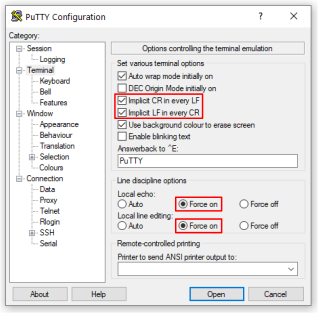

This section gets you started with your nRF5340 Development Kit (DK) using the nRF Connect SDK.
It tells you how to install the Bluetooth: Peripheral UART sample and perform a quick test of your DK.
If you have already set up your nRF5340 DK and want to learn more, see the following documentation:
Developing with nRF5340 DK for more advanced topics related to the nRF5340 DK if you are already familiar with the nRF Connect SDK.
The introductory documentation for more information on the nRF Connect SDK and the development environment.
You must program and run a precompiled version of the Bluetooth: Peripheral UART sample on your development kit to test the functions.
Download the precompiled version of the sample from the nRF5340 DK Downloads page.
After downloading the zip archive, extract it to a folder of your choice.
The archive contains the HEX file used to program the sample to your DK.
To program the precompiled sample to your development kit, complete the following steps:
Open the Programmer app.
Connect the nRF5340 DK to the computer with a micro-USB cable and turn on the DK.
LED1 starts blinking.
Click SELECT DEVICE and select the DK from the drop-down list.
The drop-down text changes to the type of the selected device, with its SEGGER ID below the name.
The Device Memory Layout section also changes its name to the device name, and indicates that the device is connected.
If the Auto read memory option is selected in the DEVICE section of the side panel, the memory layout will update.
If it is not selected and you wish to see the memory layout, click Read in the DEVICE section of the side panel.
Click Add file in the FILE section, and select Browse.
Navigate to where you extracted the HEX file and select it.
Click the Erase & write button in the DEVICE section to program the DK.
Do not unplug or turn off the DK during this process.
Note
If you experience any problems during the process, press Ctrl+R (command+R on macOS) to restart the Programmer app, and try again.
After you have programmed the sample to the DK, you can connect to it and test the functions.
If you connect to the sample now, you can go directly to Step 2 of Connecting to the sample.
You can connect to the sample on the nRF5340 DK with a terminal emulator on your computer using Universal Asynchronous Receiver/Transmitter (UART).
This allows you to see the logging information the sample outputs as well as to enter console inputs.
You can use an external UART to USB bridge.
UART communication through the UART to USB CDC ACM bridge is referred to as CDC-UART.
This is different from communication through the Nordic UART Service (NUS) over Bluetooth® Low Energy (LE).
If you have problems connecting to the sample, restart the DK and start over.
To connect using CDC-UART, complete the following steps:
Connect the nRF5340 DK to the computer with a micro-USB cable, and then turn on the DK.
LED1 starts blinking.
Open a terminal emulator; this guide uses PuTTY.
The PuTTY Configuration window opens and the Session category is chosen in the category selection tree on the left.
Select Serial as the Connection type under Basic options for your PuTTY session.
The text fields above the selection change to Serial line and Speed.
Click the Terminal category in the category selection tree to see options controlling the terminal.
Enable the following options:
Implicit CR in every LF
Implicit LF in every CR
Local echo: Force on
Local line editing: Force on

PuTTY configuration for sending commands through UART
Click the Serial category under the Connection category in the category selection tree to see options controlling the local serial line.
Type the COM port corresponding to your DK in the Serial line to connect to field.
Depending on what devices you have connected to your computer, you might have several choices.
To find the correct port (in Windows):
Right-click on the Windows Start menu, and select Device Manager.
In the Device Manager window, scroll down and expand Ports (COM & LPT).
Find the port named JLink CDC UART Port and note down the number in parentheses.
If you have more than one J-Link UART Port, unplug the one that you want to use, plug it back in, and observe which one appeared last.
Your DK can show up as two consecutive COM ports.
If this is the case, you need to test which COM port is the correct one.
Configure the following settings in the Configure the serial line section:
Speed (baud): 115200
Data bits: 8
Stop bits: 1
Parity: None
Flow control: RTS/CTS
Click Open.
The terminal window opens.
The connection has now been established.
If you test the sample now, you can go directly to Step 2 of Testing the sample.
Tap the three-dot menu next to Disconnect and select Show log.
On your computer, in the terminal emulator connected to the sample through CDC-UART, type hello and send it to the DK.
The text is sent through the nRF5340 DK to your mobile device over a Bluetooth LE link.
The device displays the text in the nRF Connect for Mobile log:
On your computer, in the terminal emulator connected to the sample through CDC-UART, type hello and send it to the DK.
The text is sent through the nRF5340 DK to your mobile device over a Bluetooth LE link.
The device displays the text in the nRF Connect for Mobile log: